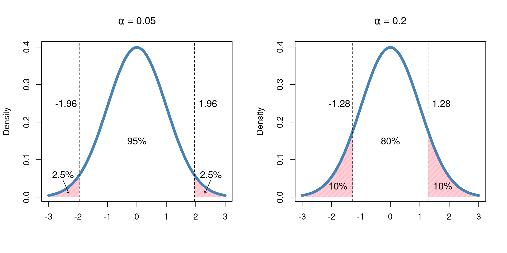

7 Tests for Means
“The only relevant test of the validity of a hypothesis is comparison of its predictions with experience.” - Milton Friedman
- Steps for hypothesis tests
- Learn how to perform one and two-sample tests for means
7.1 Steps for hypothesis testing
Much of the rest of this book focuses on implementing hypothesis tests for various research questions and data types. While each hypothesis test is slightly different in the mathematical details and specific hypotheses being compared, the general procedure does not change. We consider hypothesis tests to have three primary steps:
Things about the population
Things about the sample
Relate sample things to population (make inference)
Let’s dive a little deeper into each step.
7.1.1 Things about the population
Before doing any calculations, we first want to make sure we can describe the research question, the parameter(s) of interest, and can concretely write the null and alternative hypotheses.
7.1.2 Things about the sample
Once we set up our research question and the competing hypotheses, we can use the sample data to assess which hypothesis is more plausible. First we want to look at what we observed, i.e. what are the estimates of the population parameters of interest. Then we use the sample data to calculate a p-value, which gives us the probability of observed something as extreme or more extreme than what we observed, given that the null hypothesis is true.
7.1.3 Making inference
Finally, we want to use the p-value computed from the sample data to make inference about the population parameter(s). Since the p-value quantifies the likelihood of our observations given the null hypothesis is true, a low p-value indicates evidence against the null and a larger p-value does not give evidence against the null. Based on whether the null hypothesis is rejected or not, we can answer the stated research question.
7.2 Hypothesis test for a mean
The first type of hypothesis test we will cover in detail is a hypothesis test for a mean. This test is used when we have one sample of continuous data, for which we feel comfortable summarizing the “typical” value with the mean. We seek to compare that mean to some known or pre-specified value to learn something about the population.
oneSampleMean <- function(n, mean0, mean1, sd) {
obsDat <- rnorm(n, mean0, sd)
hist(obsDat)
abline(v = mean1, col = 'red', lwd = 2)
}
oneSampleMean(100, 5, 4, 1)
twoSampleMean <- function(n1, n2, mean1, mean2, sd1, sd2, plot = F) {
y1 <- rnorm(n1, mean1, sd1)
y2 <- rnorm(n2, mean2, sd2)
if (plot == TRUE) {
minVal <- min(c(y1, y2)) - 1
maxVal <- max(c(y1, y2)) + 1
ax <- pretty(minVal:maxVal, n = 12)
hgA <- hist(y1, breaks = ax, plot = FALSE) # Save first histogram data
hgB <- hist(y2, breaks = ax, plot = FALSE) # Save 2nd histogram data
c1 <- rgb(173,216,230,max = 255, alpha = 80, names = "lt.blue")
c2 <- rgb(255,192,203, max = 255, alpha = 80, names = "lt.pink")
ylimits <- c(0, max(c(hgA$counts, hgB$counts)))
plot(hgA, col = c1, ylim = ylimits)
# Plot 1st histogram using a transparent color
plot(hgB, col = c2, add = TRUE)
# Add 2nd histogram using different color
}
c(mean(y1), mean(y2), sd(y1), sd(y2), n1, n2)
}
twoSampleMean(100, 100, 5, 10, 1, 1, plot = T)
## [1] 5.04431 9.90422 0.87857 1.04485 100.00000 100.00000repVals <- replicate(10000, twoSampleMean(100, 100, 5, 10, 1, 1))